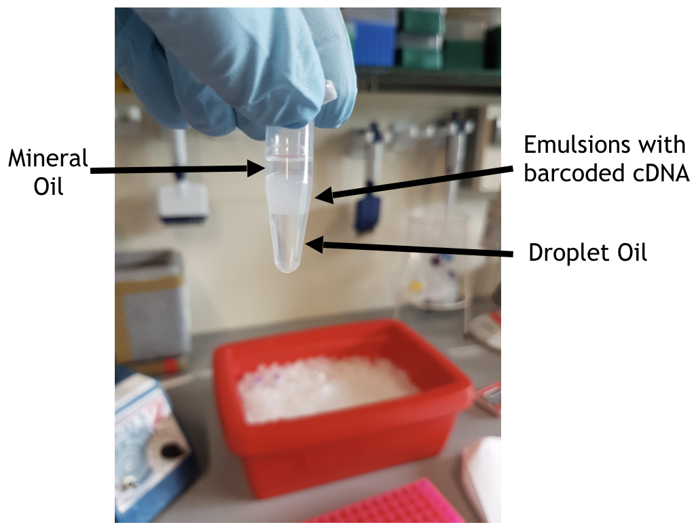
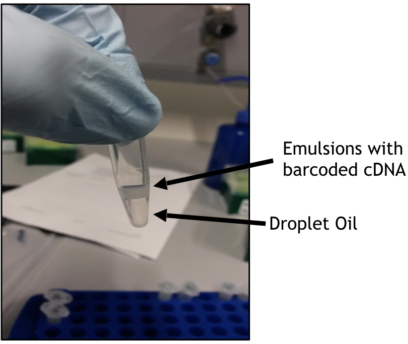
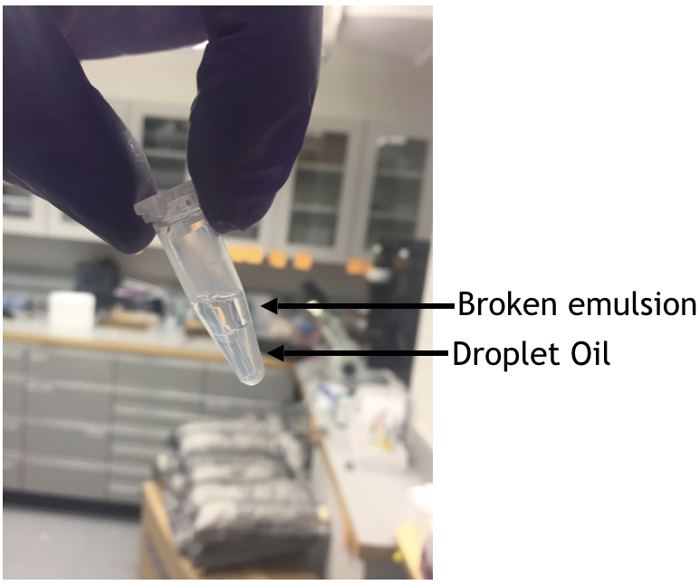

Day 1
Documentation
We use the InDrop platform from 1CellBio to isolate and barcode single cells. This technology was initialy described in this 2015 Cell paper. The steps on this page are derived from 1CellBio’s protocol for encapsulating single cells
What you’ll need
- Barcoded Hydrogel Microspheres - 500,000 beads provided in 500ul (4C)
- 1.3x RT Premix (-20C)
- 2x Gel Concentration buffer (-20C)
- Wash buffer (RT)
- OptiPrep - density matching agent (RT)
- Demulsifying agent - for breaking droplets (RT)
- Separate assemblies for loading beads, oil, cells and RT mix
- SuperScript III enzyme (10000U)
- 1CellBio UV box (we provide this)
- RNAaseZAP spray (recommended by the company…not essential)
- 1.5ml LoBind EpTubes
- Corning CoolRack M6. Store at 4C and use for keeping samples and beads chilled while on the InDrop machine. The small footprint of this cooling rack lets you set directly on the stage of the InDrop microscope.
- Gel loading pipette tips (useful for carefully drawing off maximum amount of supernatant on bead pellet or bead/oil emulsion)
A few important comments before you start
-
The bead mix for the InDrop system has about 150,000 unique barcodes for tagging individual cells. If you collect 3000 cells or less, you have minimal risk of ‘barcode collision’ - that is, having two different cells that were tagged with the same barcode, thus making them indistinguishable.
-
You can encapsulate as many cells as you like, but you must split up your final bead emulsion into pools of ~3000 cells to prevent barcode collision. This is ideally done at the time of encapulation, simply by collecting into a new tube for each set of 3000 cells collected from the same sample. However, it can also be done during 1st strand cDNA reaction. Either way, these separate pools will be tagged with a unique illumina index. In the analysis step, you can merge pools from the same sample.
-
Each molecule is tagged with a Unique Molecular Identifier (UMI), which is used to count individual mRNAs in you experiment. You can read more about UMIs in this Nature Methods paper.
-
The InDrop protocol uses a lot of Superscript III. We typically order about 10,000U of the enzyme, and find that this is only enough to process about 6 samples.
Instrument set-up
-
Log into the laptop provided by 1CellBio – the login password is “inDrop” – and Click desktop icon labeled “Thor”. This opens the software that controls the instrument and implements the InDrop process.
-
Remove the syringe and loading assembly from the ‘beads’ package. This syringe is shipped pre-filled with hydraulic fluid specific to the loading the hydrogel beads. Remove cap on syringe, attach tubing and manually expel syringe volume until it is near the end of the tubing. Secure assembly into the appropriately labeleld automatic pump on the InDrop.
-
Repeat the above step for eachof the four syringe assemblies.
-
Syringes can remain on the machine for 2 weeks and can be used for multiple experiments
-
On the first tab of Thor software, click “Set Up”. Input the total number of cells you want encapsulate, the concentration of your cell solution, and the desired Bead-to-cell ratio. Clicking on the “calculate” button will populate the boxes below with the volume, in microliters, of each reagent that needs to be prepared. Clicking on the “?” gives the recipe of the RT/Lysis Mixture to be made.
-
Prepare microchip devices by following the Chip Silanizing protocol. Carry out the silanization as close as possible to the encapsulation. If something does go wrong with one device, you do not have to repeat the whole process. Just pick up the microfluidic connectors and move to the next silanized device. Silanization is only good for a few hours.
-
Click “next” on the Thor software to move forward to bead preparation
Prepare beads
-
Concentrate beads in the stock, 1.5 mL tube by spinning at 5000xg for 2 min in a 1.5ml LoBind Ependorf tube.
-
If you want to prep all the beads in the kit (enough for encapsulating about 30,000 cells). Reach down into the pelleted beads with your pipet tip and draw up 250 ul of the pellet (should be almost all of it), leaving behind the supe (storage buffer).
-
Transfer this bead volume to a 1.5ml LoBind Tube, and add 1ml Wash Buffer. This buffer will cause the beads to swell, making them more porous and even harder to see. Spin at 1000g for 1min, remove supe.
-
Repeat this washing, at least 2-3 more times.
-
After the last wash, draw off a volume of Wash Buffer to leave about 500ul of beads/buffer left in the tube. To this volume, add 500ul of the 2x Concentration Buffer.
-
Spin at 5000xg for 1min. The concentraiton buffer added in the previous step will cause the beads to shrink back down a bit, resulting in a smaller pellet.
-
Draw off as much supe as possible (using a gel loading tip is helpful here), spin again at 5000xg if necessary to draw off more supe.
-
Prime the bead pump to make sure the line is cleared of air. You should see small droplets of fluid coming out of the tubing (just dab on a kimwipe). If the line contains lots of air, you can use the Thor software to crank up the priming flow rate to speed the process.
-
After priming, immerse the end of the tubing into your packed bead pellet and parafilm the top to hold the tubing in place.
-
Use Thor to begin loading your desired bead volume.
- Once loading is complete, resuspend residual beads in new storage buffer and return to storage. These can be used for future experiments. In addition, supe saved from the bead prep process can be spun down at 5000xg to pellet residual beads for resuspension and storage.
Cell encapsulation
-
With beads loaded onto the InDrop, you are now ready to prepare your cells.
-
Resuspend cells at 100K/ml in cold PBS. You will only need < 1ml final volume of cells at this concentration.
-
Prepare the calculated amount of RT/Lysis mixture. Click on the “?” in the Thor software to see the breakdown of the RT/Lysis mixture will be given. Prepare 10% extra volume for RT mix, and add excess cell volume as well. This will prevent air from being drawn up into the lines during loading.
-
Immediately before you begin the collection add OptiPrep, a density matching gradient included in the kit from 1CellBio, to your cell suspension to get a final concentration of 18% OptiPrep.
-
Collect droplets into a 1.5ml LoBind tube containing 200ul mineral oil.
-
If you plan to collect more than 3000 cells from a sample, switch tubes during the collection.
-
It’s a good idea to collect two 10sec high-speed videos: 1) of your cells coming onto the device…this provides useful information about cell size, clumping, etc. And 2) your encapsulation…so you can appreciate droplets with only beads, beads and cells, multiple beads, etc. All movies are saved in folders labeled by date, under Documents -> Thor videos, on the laptop attached to the Indrop system. Movies can be viewed and edited in ImageJ.
-
your pre-RT bead emulsion should rememble the one in the picture below

In-droplet 1st strand cDNA reaction
-
Immediately following droplet collection, place the 1.5ml LoBind tube(s) containing droplets into a the 1CellBio UV box for 10 sec. This cleaves the oligos off the bead, allowing you to carry out a cDNA reaction in solution.
-
Immediately incubate tube in a heatblock at 50C for 2hr. This is your 1st strand cDNA reaction.
-
Incubate at 70C for 15min to heat kill the reaction
-
Use a gel loading pipette tip to remove as much of the mineral oil (clear) on top of the bead emulsion layer (white). Avoid removing any of the bead emulsion, since each droplet contains a cell. Under the bead emulsion is residual droplet oil, which you can ignore.
-
After removing the mineral oil, your post-RT bead emulsion should resemble the one in the picture below

-
Break up droplets by adding an equal volume of demulsifier (1CellBio kit) to your tubes (just eyeball the volume of bead emulsion in the tube and add equal vol of demulsifier).
-
Vortex for 5 seconds and spin at 1000xg for 1min. Your sample should now appear clear as shown in the image below. If not, repeat the demulsifer step.

- Your sample can now be stored at -80C for up to 3 months.
Instrument clean-up
-
For the cells and RT mix pumps, dispense until remaining fluid is ejected and red hydrolic fluid is at the end of the tip again.
-
Once cells and RT are cleared from the tips, use the ‘withdraw colored oil’ function in the Thor software to pull the hydrolic fluid back into tubing and clear the tips. Remove tips and discard.
-
Dispense beads into a LoBind tube. Resuspend 1:1 with storage buffer and store protected from light at 4C.
-
Close software and turn off microscope.
-
Store microfluidic chip at RT, with the unused devices covered with the protective tape. Be sure to use a pen to mark which device(s) has been used.